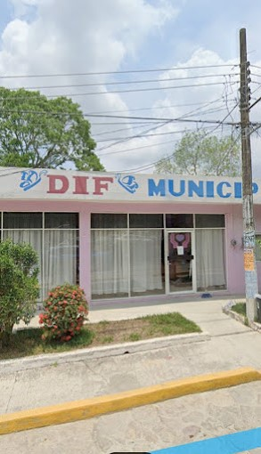

DIF de Castillo de Teayo, Ver.

El sistema Nacional para el Desarollo Integral
de las Familias, comunmente llamado DIF Nacional o DIF,
es un organismo descentralizado mexicano sectorizado
a la secretaria de salud con las funciones de la institucion
publica encargada de dirigir la asistencia social a nivel
nacional.